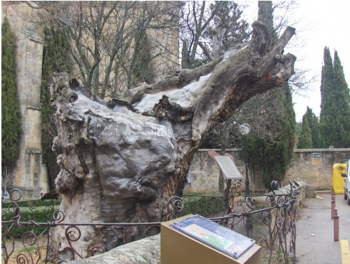

A UN OLMO SECO
Ir al final de la página
Al olmo viejo, hendido por el rayo y en su mitad podrido,
con las lluvias de abril y el sol de mayo
algunas hojas verdes le han salido.
¡El olmo centenario en la colina
que lame el Duero! Un musgo amarillento
le mancha la corteza blanquecina
al tronco carcomido y polvoriento.
No será, cual los álamos cantores
que guardan el camino y la ribera,
habitado de pardos ruiseñores.
Ejército de hormigas en hilera
va trepando por él, y en sus entrañas
urden sus telas grises las arañas.
Antes que te derribe, olmo del Duero,
con su hacha el leñador, y el carpintero
te convierta en melena de campana,
lanza de carro o yugo de carreta;
antes que rojo en el hogar, mañana,
ardas en alguna mísera caseta,
al borde de un camino;
antes que te descuaje un torbellino
y tronche el soplo de las sierras blancas;
antes que el río hasta la mar te empuje
por valles y barrancas,
olmo, quiero anotar en mi cartera
la gracia de tu rama verdecida.
Mi corazón espera
también, hacia la luz y hacia la vida,
otro milagro de la primavera.
Antonio Machado, 4 de mayo de 1912
Más sobre Machado
Otros varsos de Machado